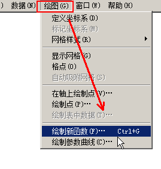
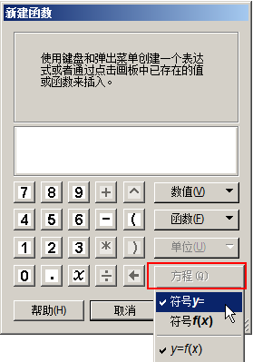
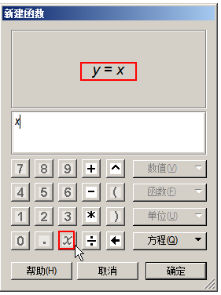
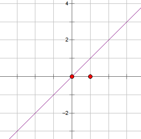
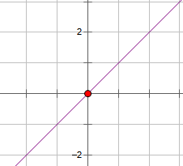
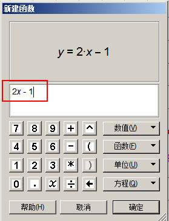
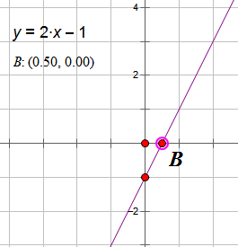

几何画板基础入门教程
作者：TeliuTe 来源：基础教程网
十二、一次函数 返回目录 下一课函数是等式 y 和 x 的一 一对应关系，y=kx+b 是一次函数；
1、一次函数
1）绘制正比例函数 y=x 的图像，点菜单“绘图 - 绘制新函数”；

2）在出来的对话框，右下角点“方程 - 符号y=”，设成y与x的函数形式；

3）在左边的小键盘里，点击x，或者输入x也可以；

4）点确定，工作区里就会出现直角坐标系，同时有一条直线，就是 y=x 的函数图形；

5）图中坐标系有两个点，一个是原点，拖动它可以移动坐标系，另一个是坐标轴单位大小，可以隐藏这个点；

6）再点菜单“绘图 - 绘制新函数”，设置“符号y=”，输入 2x-6，点确定；

7）一次函数和坐标轴有两个交点，选中图像和坐标轴，构造交点，“度量 - 坐标”，求出点位置；

本节学习了绘制函数的基础知识，如果你成功地完成了练习，请继续学习下一课内容；
本教程由TeliuTe制作|著作权所有
基础教程网：http://teliute.org/
美丽的校园……
转载和引用本站内容，请保留作者和本站链接。